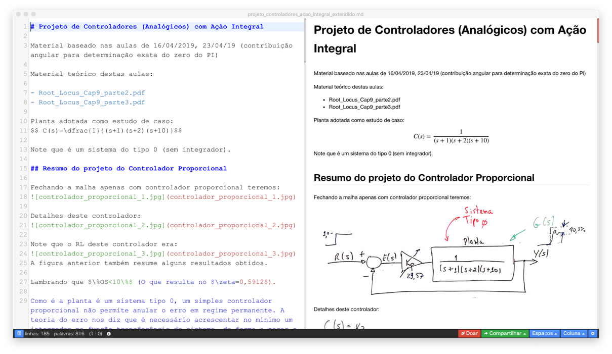
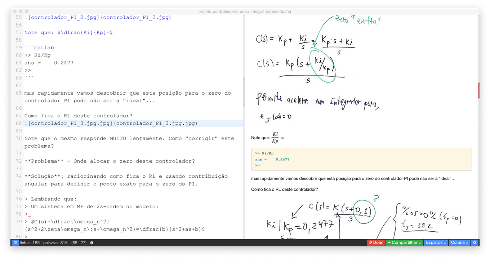
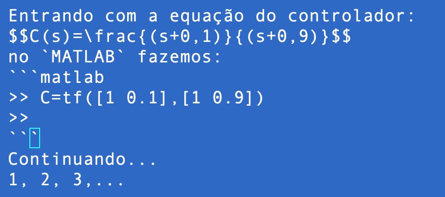
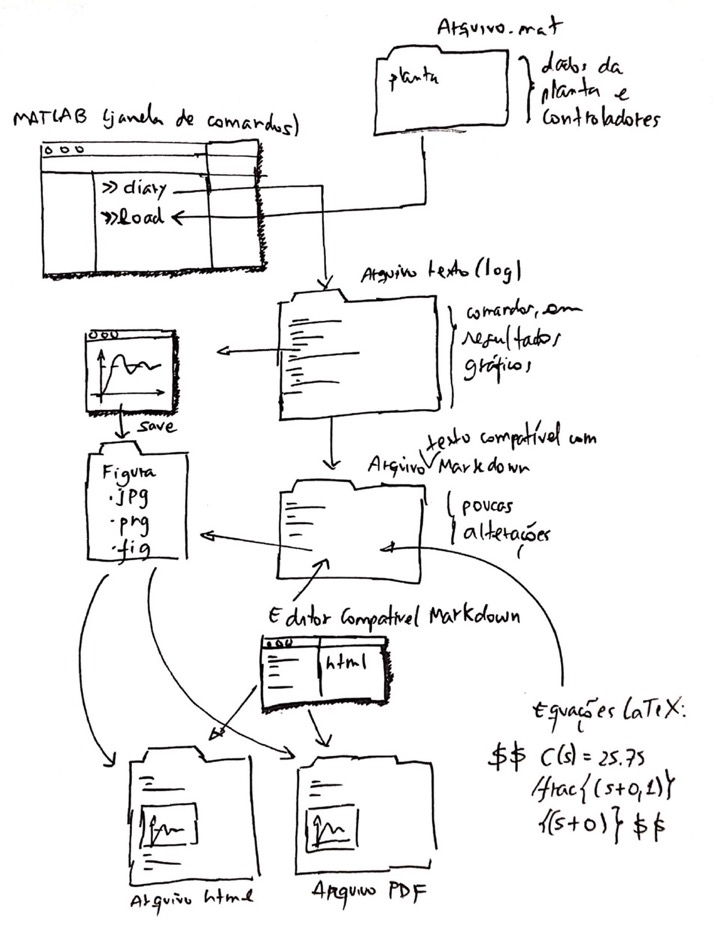

Segue-se sugestões para utilização mais prática e eficaz do MATLAB na aulas de Controle Automático.
O objetivo principal aqui é criar um arquivo texto fácil de ser editado (no caso, resultará em uma págna html incluíndo figuras, gráficos do MATLAB e comandos usados no MATLAB) para resumir as aulas e conteúdo sendo explorado na disciplina de Controle Automático). Uma opção para gerar este tipo de documento seria usar processadores de texto usuais como o Office Word por exemplo. Mas existe umna forma mais prática e ráapida.
O MATLAB permite criar um “diário” (arquivo texto) refletindo os comandos e resultados obtidos na janela de comandos (CLI = Comand Line Interface*) do mesmo.
E o MATLAB através dos comandos save <file> (e contra-parte: load <file>) permite salvar todas as variárias (com valores) gerados em determinada seção de trabalho no mesmo.
Conciliar os comandos diary, save e load do MATLAB podem permitir agilizar a operação das aulas de controle automático e facilitar bastante o seu registro (para posterior revisão/estudo).
1. Antes de criar um arquivo texto “diário” e considerando-se que seja interessante de alguma forma incorporar neste “diário” os resultados gráficos obtidos, recomenda-se fortemente que, antes de executar os próximos comandos, que o usuário, chaveie o MATLAB para o diretório no qual pretende concentrar o aquivo “diário” à ser criado e os arquivos gráficos (figuras) — preferencialmente num diretório diferente do standard usado pelo MATLAB que é ~/Documentos/MATLAB.
MATLAB para determinando diretório você pode na CLI usar o comando cd para forçar o MATLAB até o diretório correto ou simplesmente usar a barra superior da CLI do MATLAB e ajustar o diretório de trabalho para outro que não seja ~/Documentos/MATLAB:~/Documents/UPF/Controle_II/6_Usando_RL_Projetos. O local atual do diretório sendo usado pelo MATLAB pode ser confirmada usando comando pwd:>> pwd
ans =
'/Users/fernandopassold/Documents/UPF/Controle_II/6_Usando_RL_Projetos'
>>
2. Uma vez decidido em que diretório serão concetrados os arquivos gerados na atual seção de trabalho, o arquivo “diário” pode ser criado simplesmente usando o comando diary <nome_arquivo>.txt:
>> diary aula_12_09_2019.txt
No caso anterior, os próximos comandos seguintes ao diary serão todos gravados no arquivo texto aula_12_09_2019.txt. Este arquivo pode ser editado por qualquer editor de textos comum como o Notepad (no Windows) ou TextEditor (no Mac) ou nano (na CLI de um sistema Linux). Sugere-se o uso de editores de texto mais poderosos como o Sublime Text (multiplataforma) ou adotar diretamente algum editor de arquivos texto compatível com Markdown [ O que é Markdown, Página Wikipedia sobre Markdown].
3. Note que todos os próximos comandos passados ao MATLAB serão automaticando repassados para o arquivo texto <arquivo.txt>, com excessão das figuras (gráficos criados no MATLAB).
4. De forma a “acrescentar” ao diário gerado as figuras dos gráficos gerados numa seção de trabalho no MATLAB a idéia é fazer uso da linguagem Markdown. Nesta linguagem, figuras podem ser incluídas num arquivo no formato final .html ou .pdf se no arquivo .md (ou arquivo texto compatível com Markdown) forem incorporados os comandos:

No caso acima, a figura à ser acrescentada no arquivo .html é obtida diretamente via internet (neste caso, uma conexão online é necessária).
No nosso caso, as figuras vão ficar disponível “online” no próprio equipamento. Então o comando anterior se modifica ligeiramente para:

onde arquivo_imagem pode ser um arquivo do tipo: .jpg, .gif (animado até), .png.
Por exemplo, em determinado instante de uso do MATLAB podemos querer incluir no arquigo diário sendo criado, a figura (gráfico) do resultado gráfico da resposta ao degrau aplicado à determinada função transferência de malha-fechada. Neste caso, na janela de gráfico (Figure #) do MATLAB você deve selecionar: File >> Save, para gerar o arquivo com a figura desejada. O MATLAB permite gravar vários formatos de imagens:
Repare na figura anterior, no diretório onde estarão sendo gravadas as imagens/figuras.
5. Recomenda-se que uma vez que a figura tenha sido salva, que na CLI do MATLAB se acrescente uma linha como:
>> % Resposta ao degrau de diferentes controladores:
>> % 
A sequencia de comandos acima será repassada para o arquivo texto sendo criado.
6. Ao final da seção de trabalho no MATLAB, recomenda-se salvar num arquivo .mat as variáveis criadas/usadas na atual seção de trabalho através do comando save, por exemplo:
>> save planta
Note que neste caso, não é necessário se fornecer a extensão para o arquivo sendo criado. O próprio MATLAB assume que será criado o arquivo planta.mat para o caso do exemplo anterior.
7. Recomenda-se então que o usuário “feche” o arquivo texto do diário, fazendo:
>> diary off
Este comando efetivamente fecha o arquivo texto iniciado anteriormente. Em sistemas Windows, somente depois do diary off é que o arquivo texto criado ficará disponível no Explorer. Se o usuário esquecer de fornecer o comando diary off em máquina Windows, corre-se o risco de danificar o arquivo caso a máquina entre em hibernação, o usuário saia do MATLAB ou simplemente desligue o Windows.
8. Se não houve nenhum erro até aqui, deve constar no diretório atual de trabalho, o arquivo texto referente ao diary recém fechado e mais as figuras salvas enquanto se estava trabalhando no MATLAB.
Exemplo de conteúdo de um arquivo .txt criado no MATLAB via diary:
pwd
ans =
'/Users/fernandopassold/Documents/UPF/Controle_II/6_Usando_RL_Projetos'
G=tf(1,poly([-1 -2 -10])) % ingressando dados da planta
G =
1
------------------------
s^3 + 13 s^2 + 32 s + 20
Continuous-time transfer function.
zpk(G)
ans =
1
------------------
(s+10) (s+2) (s+1)
Continuous-time zero/pole/gain model.
save planta
OS=10;
zeta = (-log(OS/100))/(sqrt(pi^2 + (log(OS/100)^2)))
zeta =
0.5912
save planta
% grafico salvo como: step_integrador_puro.jpg
% 
diary off
Note que o “prompt” (>>) do MATLAB não é repassado para o arquivo texto.
Como o arquivo texto criado não passa de um simples arquivo texto, sem figuras, recomenda-se passá-lo para o formato Markdown.
9. No Explorer (ou outro navegador de arquivos presente no seu sistema), renomeie o arquivo .txt recém criado para .md.
10. Este arquivo .md pode ser editado em qualquer editor de textos simples ou outro compatível com Markdown.
11. Edite o arquivo .md e retire os comentários (%) presentes no arquivo texto. Principalmente em linhas como:
% grafico salvo como: step_integrador_puro.jpg
% 
As linhas acima devem ficar algo como:
Grafico à seguir mostra resultado da entrada degrau aplicada ao controlador

12. Uma vez editado o arquivo .md, se o usuário estiver usando um editor de textos compatível com Markdown, pode então exigir que seja vizualizado um “Preview” mostrando o resultado da interpretação dos comandos Markdown contidos no arquivo texto.
A figura à seguir mostra o editor Haroopad (free e multiplataforma) usado para editar/interpretar arquivos texto compatíveis com Markdown. Este editor além de interpretar comandos Markdowns, interpreta equações incorporadas no arquivo texto (.md) usando formato LaTeX. Veja exemplos nas próximas figuras (se editor além de compatível com Markdown, estiver preparado para lidar com MathJax (rendering support library):


É simples engressar uma equação no formato compatível Markdown, basta introduzir a equação num formato compatível com LaTeX entre os caracteres $.
Por exemplo
$ C(s)=\dfrac{1}{(s+1)(s+2)(s+10)}$
produz:
$ \zeta = \dfrac{ -\log(OS/100) }{\sqrt{pi^2 + \log(OS/100)^2} }$
gera:
$ \omega_n = \sigma / \zeta $
gera:
Note que as equações ou expressões matemáticas podem ser introduzidas no meio do texto, por exemplo:
Lembrando que $\%OS<10\%$ (O que resulta no $\zeta=0,5912 $).
gera:
Lembrando que
MATLABLinhas de comando do MATLAB podem ser destacadas do texto, colocando as linhas de comandos entre 3 caracteres de crases, por exemplo:

O que gera:
Entrando com a equação do controlador:
no MATLAB fazemos:
>> C=tf([1 0.1],[1 0.9])
>>
Continuando…
1, 2, 3,…
diary ou durante a edição do arquivo Markdown uma forma de controlar o tamanho das figuras é incoporar diretamente código html no arquivo .md. Por exemplo:
<img src="figura.jpg" alt="figura" width="500"/>
<img src="figura.jpg" width="200" height="200" />
width já permite escalonar a figura de forma conveniente.alt é opcional (não necessário).
Outra idéia (tendência): instalar “Jupyter notebook“ para trabalhar com o MATLAB:
conda e python > 3.5.Documento atualizado em 13/09/2019 (c) Fernando Passold